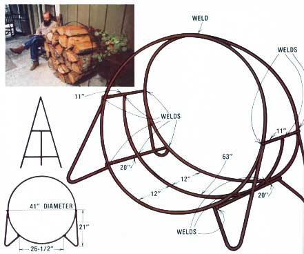

Taint nothing as soul-satisfying in the dead of winter as a healthy fire cracklin' away in an open hearth (or any of the newer and more efficient fireplaces and wood-burning stoves now on the market). Nothin', that is, except the secure knowledge that you have plenty of cut, split, and dried fuel right at hand . . . to keep that of blaze snappin' and poppin' for the rest of the day and far into the night.
And that, of course, is perzackly the kind of security that the log holder shown here can provide. Just fill 'er up once . . . and you're set to ride out most any storm that OI' Man Winter is likely to throw your way during the coming months.
All you'll need to construct one of these fireplace accessories for yourself is a welding torch (or access to one), a tape measure, a hacksaw, and three 20-foot lengths of 3/8-inch rebar (construction reinforcing bar). And if you don't have-or can't use-a torch or an arc welder, no problem: Most professional welders (or scrap yard men or even body shop people) can be cajoled into making the necessary 13 welds for a reasonable flat fee.
Start the fabrication of the log holder by cutting one full length of the rebar exactly in half to create two pieces of the rod, each approximately 10 feet long. (It really doesn't matter a great deal precisely how long the lengths of rebar are . . . as long as they closely match.)
And while you're in the cutting "business", you might as well go ahead and ruse your trusty hacksaw to zip the remaining two lengths of rebar into one 63-inch long section, four 32-inch pieces, two 20- inch-long sections, and two 11-inch lengths of the rod.
OK. Now bend both 10-foot pieces of rebar around a tractor tire, truck tire, feeding tank, hot tub, an old telephone wire spool . . . anything that will form the rod into matching circles about 41 inches in diameter. Lay one of the rings flat on a cement floor, the ground, or any level surface and form an unbroken circle by welding the joint where its two ends butt together. Then roll the first ring out of the way and repeat the process with circle number two.
Next, bend the four 32-inch lengths of rebar into matching "V" shapes . . . each of which has one 20-inch-long and one 10-inch-long leg (the bend itself should use up about two inches of the bar). Then lay one of the big rebar rings flat on the ground and-opposite the circle's joint-weld on two of the "V" legs as shown. The long sides of the V-legs, you'll note, are mounted about 21 inches up from the ring's bottom and the short sides are tack welded about 26-1/2 inches apart.
(These measurements can vary a little one way or the other, as long as care is taken to match the second circle/legs combination as precisely as possible to the first. And the easiest way to do that-once the initial set of legs has been welded to its ring-is to simply lay the second circle and set of "V" supports down on the first, move them around until everything lines up, tack the "new" assembly well enough so it'll hold together, pull the "old" one out from under it so the second ring/legs can lie flat on your level surface, and finish-weld the assembly.)
Aha! You now have two identical circles of rebar identically attached to two indentical sets of "V" legs. Good. Join the two assemblies together by [1] welding the two pre-cut 11-inch lengths of rebar across the tops of the legs and [2] welding the two 20-inch-long sections of rod across the legs' bottoms. Then add extra strength and a "floor" to the log holder by bending the 63-inch pre-cut section of rebar to match the curvature of the holder's lower half and welding it to both 11-inch-long and both 20-inch-long crossmembers.
Take care to "twist" the log holder slightly as necessary during this last step so the finished article will sit level without rocking. Any remaining "out of square" can then be allowed for by, again, twisting the stand slightly before a final weld is made at the rack's top where the two circles of rod meet.
Slap on a good coat of rustproof flat black paint ... and you've just built yourself a dandy log holder that's good enough looking to display in either your living room or out on the front porch. Better yet, it's big enough to keep a man-sized stack of wood all neatly contained and up off the floor.
And best of all: If you were able to scrounge up your rebar, you built your brawny rack for nothing but a little time and the cost of a dab of paint. Even if you had to buy the reinforcing rod (at 11 cents a foot), in fact, you're still ahead of the game: Your better-than-store-bought log holder set you back far less than $10!
|
 |
|
|